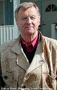
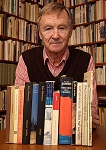

Kurt Olov Stefan Salomonson
Journalist och författare, hedersdr vid Umeå Universitet 1990.
| Född: | 1929-07-18 Sörböle, Skellefteå lfs, Skellefteå sn. [1] |
|---|
| Vigsel: | [2] |
|---|
| Levde: | 1955 Nora bergsförs, Nora sn, Örebro län. [2] |
|---|
| Levde: | 1971 Frihetsv 51, III, Jakobsberg, Järfälla fs, Järfälla kn. [2] |
|---|
| Levde: | 1981 Jakobsberg 2:1516, Frihetsv 51, III, Jakobsberg, Järfälla fs, Järfälla kn. [3] |
|---|
| Levde: | 2009 Brogatan 21 bv läg 04, Umeå. [4] |
|---|
Noteringar
Kurt Salomonson, född år 1929 i Hjoggböle nära Skellefteå i Västerbotten, är en svensk författare och bror till Anita Salomonsson.
Handskrift 156. Författaren Kurt Salomonsons arkiv (1929-)
Kurt Salomonson har kallats för arbetardiktens förnyare i Sverige. Han föddes 1929 i Hjoggböle i norra Västerbotten och arbetade i unga år som gruvarbetare. Hans intresse för skrivande förde honom in på journalistbanan med arbeten vid bl.a. tidningarna Norra Västerbotten och Arbetarbladet.
Hans författardebut kom 1954 med boken Mordleken. Flera av de därpå följande romanerna utspelar sig i en för honom välbekant gruvmiljö. Kurt Salomonson har i sina romaner och reportageböcker ofta skildrat missförhållanden på arbetsplatser och även riktat kritik mot fackföreningsrörelsen.
Salomonson har för sitt författarskap bl.a. belönats med Svenska Dagbladets litteraturpris 1959, Ivar Lo-priset 1989 och Illis quorum 1989. År 1990 blev Kurt Salomonson filosofie hedersdoktor vid Umeå universitet.
Kurt Salomonsons arkiv består till största delen av manuskript (delvis outgivna), korrespondens samt tidningsklipp. Materialet rymmer ca 1 hyllmeter och är fritt tillgänglig för seriös forskning.
Umeå 2012-02-24
Gabriel Runeby
Salomonson har tidigare arbetat som gruvbyggare i Laisvall och Bergslagen. Han arbetade som journalist vid tidningarna Norra Västerbotten 1948-1951 och Arbetaren 1955-1958. Flera av hans böcker skildrar missförhållanden i svenskt arbetsliv.
Bibliografi
Mordleken, 1954
Hungerdansen, 1955
Grottorna, 1956
Deras vrede, 1957
Mannen utanför, 1958
Sveket, 1959
Nattvandraren, 1960
Skiljevägen, 1962
Sista skiftet, 1967
En dag i gruvan, 1972
Flickan med sagohåret, 1979
Skönast på jorden är Kvikkjokk om våren, 1981 (tillsammans med Jan Fogelbäck)
Gåvan, 1986
Priser och utmärkelser
Svenska Dagbladets litteraturpris 1959
Ivar Lo-priset 1989
Hedenvind-plaketten 1990
Hedersdoktor vid Umeå universitet 1990
_______________________________________________________________
Så här skriver Björn Lindholm om Kurt Salomonsson - en Hjoggböleförfattare
www.hjoggbole.nu/historik/Kurt_S/KurtS.html
Kurt Salomonsson (f.1929) från Hjoggböle i Skellefteå, en by som är "Sveriges författarrikaste", romandebuterade 1955 . Kurts litterära bana startade som 17-åring hemma i Hjoggböle.
- Jag har tidningen Norra Västerbottens ( nedan kallad Norran ) dåvarande chefredaktör KH Wikström att tacka för mycket. Han gav mig möjlighet att skriva, och såg till att mina alster publicerades, berättar Kurt. Det var också i Norran som det litterära intresset väcktes. Debuten blev ett sportreferat hemma från Hjoggböle där fotbollslaget nådde framgångar och klättrade i seriesystemet.
- Jag minns att jag moraliserade i mina texter. Exempelvis hade jag sett fotbollsspelarna dricka öl på en danstillställning. Det tog jag med i referatet.
- I NV kunde man läsa följetonger av Sigge Stark. De gjorde stort intryck på mig. Att läsa böcker var inte riktigt fint i mina hemtrakter. Därför blev dagstidningen vår litterära skola.
Det första skönlitterära alstret hette Mordleken och publicerades i All världens berättare 1954. Att det trots den litterära fattigdomen i hembyn kom att formas flera stora författare är det många som undrat över. Förutom Kurt Salomonsson och P O Enquist finns ju ytterligare namnkunniga författare - bland dem Kurts syster Anita Salomonsson.
- Byn präglades av tystnad. En tystnad som lagrades och till slut sprängdes. Då kom allt vi samlat på oss ut.
Att böcker mer eller mindre var förbjudna förklarar Kurt Salomonson så här:
- Befolkningen var ängsliga att avvika. Att hitta något i böckerna som avvek från deras egen livsstil.
Men en berättartradition fanns hos kvinnorna.
- Jag har efteråt fått berättat av min syster att min mor långt in på nätterna berättade för henne om mycket. Det visste jag aldrig. Karlarna pratade sällan om det som inte rörde det allra närmaste som exempelvis arbetet.
Kurt Salomonson är ett barn av sin tid. Som arbetarförfattare är han självlärd med sexårig folkskola bakom sig.
- Men en mycket bra skola. Jag har bara goda minnen från skoltiden
Kurt Salomonsson skrev 1956 romanen "Grottorna". Den skrevs i gruvsamhället Laisvall där Kurt en gång jobbade. "Grottorna", som handlar om Laisvalls samhälle och gruvan, väckte starka reaktioner när den kom ut. Personer i samhället kände sig träffade, och flera litteraturkritiker ifrågasatte bokens äkthet. "Grottorna" vände mer eller mindre upp och ned på den etablerade litterära världen.
- När jag kom till Laisvall fick jag se verkligheten i vitögat. Mina lyckliga slut blev inte lyckliga längre. Jag både skrämdes och blev arg av det människoförakt som de höga herrarna visade.
- Jag skrev ned mina upplevelser på lappar. Sen skaffade jag en reseskrivmaskin av märket Erica. Många arbetskamrater hörde säkert skrivmaskinsknattret på nätterna i baracken.
Om sina tre år som gruvarbetare berättar Kurt;
- Det var inga problem att stå ut. Det fanns en Klondykestämning och en äventyrsanda som tilltalade mig.
Kurt Salomonsson har tidigare sagt att han skrev boken om gruvan i Laisvall för att han kände sig tvingad att berätta om arbetssituationen. Idag används boken ofta som bakgrundshistorik inom arbetarrörelsen.
Kurt har också under årens lopp belönats med diverse utnämningar. Bland annat till hedersdoktor vid Umeå universitet 1990 och Hedenvindplaketten 1990. 1989 belönades också Kurt med Ivar-Lo priset som utdelas av fackföreningsrörelsen. En doktorsavhandling kring Kurts författarskap är också på gång.
Kurt Salomonson berättar om några händelser som betytt mycket för honom;
- När genombrottet kom med Grottorna kändes det som en triumf. När jag blev hedersdoktor vid universitetet i Umeå 1990 fanns också en känsla av tillfredsställelse. Och nu när Carl-Eric Johansson vill ägna mitt författarskap en doktorsavhandling är jag naturligtvis också hedrad.
Sedan romanen "Grottorna" har Kurt skrivit flera romaner. Slutat skriva har han inte. Han har planer.
- En uppföljning på trilogin Mannen utanför, Sveket och Skiljevägen finns som projekt.
Personhistoria
| Årtal | Ålder | Händelse |
|---|
| 1929 |
|
Födelse 1929-07-18 Sörböle, Skellefteå lfs, Skellefteå sn [1] |
| 1935 |
6 år |
Systern Anita Lilian Augusta Salomonsson föds 1935-09-10 Västra Hjoggböle, Bureå fs, Skellefteå sn [5] |
| 1955 |
|
Levde Inez Gunborg Bengtsson 1955 Nora bergsförs, Nora sn, Örebro län [2] |
| 1969 |
39 år |
Fadern Salomon Edvin Salomonsson dör 1969-05-28 Hjoggböle 3:15, Bureå fs, Skellefteå kn [6] |
| 1971 |
|
Levde Inez Gunborg Bengtsson 1971 Frihetsv 51, III, Jakobsberg, Järfälla fs, Järfälla kn [2] |
| 1981 |
|
Levde Inez Gunborg Bengtsson 1981 Jakobsberg 2:1516, Frihetsv 51, III, Jakobsberg, Järfälla fs, Järfälla kn [3] |
| 1983 |
53 år |
Modern Beda Augusta Karlsson dör 1983-01-30 Florav 17, Skellefteå, Sankt Olovs fs, Skellefteå kn [7] |
| 2009 |
|
Levde Inez Gunborg Bengtsson 2009 Brogatan 21 bv läg 04, Umeå [4] |
Dokument
Källor
| [1] | SCB Födda AC Bureå 86/1929, Mtl Stockholms stad och län 1971 |
| |
| | |
| [2] | Mtl Stockholms stad och län 1971 |
| |
| | |
| [3] | Mtl Stockholm län 1981 |
| |
| | |
| [4] | https://www.ratsit.se/sok/avancerat/person |
| |
| | |
| [5] | SCB Födda AC Bureå 101/1935 |
| |
| | |
| [6] | DB, PA / RTB 69 / UTD 69d |
| |
| | |
| [7] | RTB 83 / SPAR 90 |
| |
|
|  |
|
| |
|  |
| Fotograf: Kjell Hanseklint |
|
{kind=link}
{kind=link}